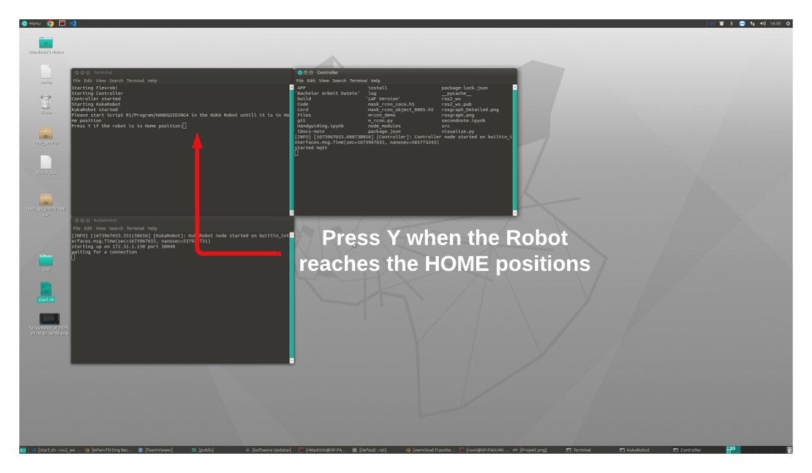
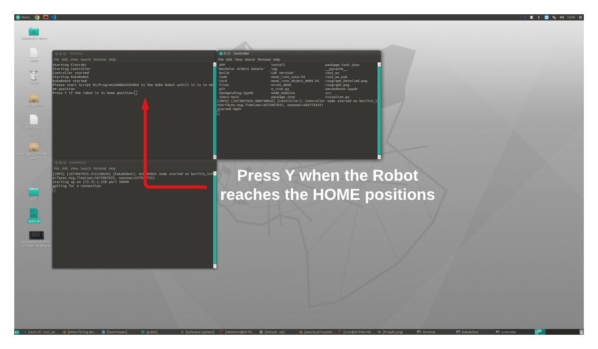
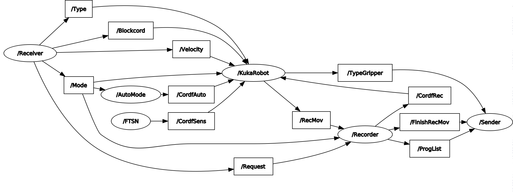
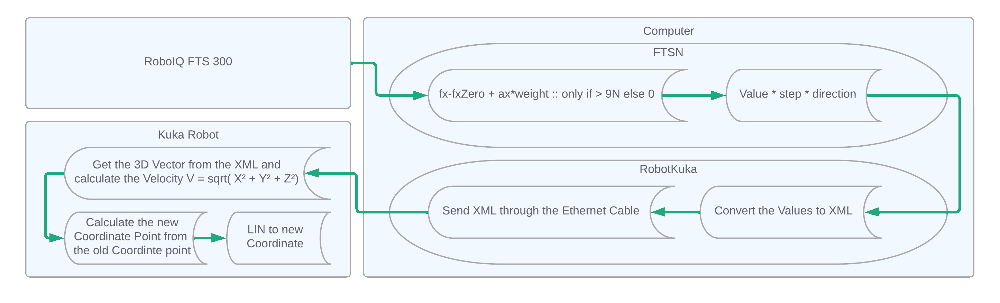
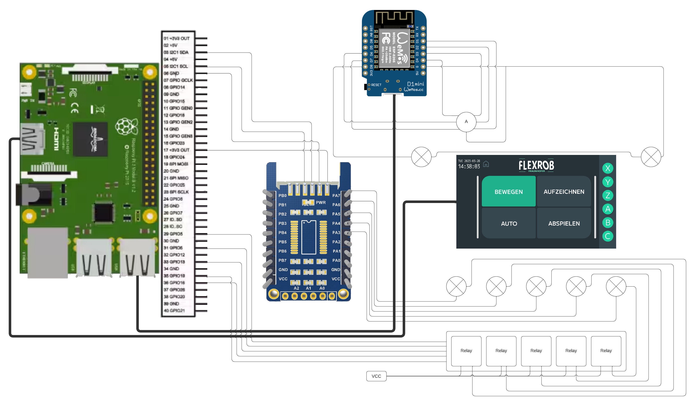
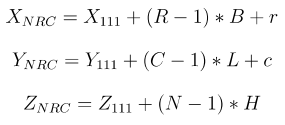

Documentation
FlexRob Doc
- Version: 1.0
- Author: Iheb Mrabet
- ROS2 Version: Foxy Fitzroy
- Created: 16 January, 2023
- Update: 17 January, 2023
- EOL date: May 2023
If you have any questions that are beyond the scope of this help file, Please feel free to email via Support Email.
Build
Build package:
- Change directory:
cd ros2_ws - Run the node:
colcon build --packages-select "my_py_pkg" --symlink-install
NoteMake sure that the correct source is build!!
Launch
Bash Script:
This is a Bash script that starts various processes for Flexrob system.
It runs VUE.JS based GUI, Controller, KukaRobot, and FTSN processes in terminal windows and waits for user
to confirm Kuka robot is in home position before starting FTSN process.

 


Launch a specific node
- Change directory:
cd ros2_ws - Run the node:
ros2 run my_py_pkg "py_node"
Launch VUE.JS server
- Change directory:
cd ../Desktop/GUI/gui-vuejs-main/client - Run the server:
serve -s dist
Nodes
Package nodes:
The Package is divided into five main nodes: KukaRobot, Sender, Receiver, Recorder , FTSN and Automode. The KukaRobot node handles the communication with the robot, the Receiver class receives messages from an MQTT client and publishes them to the ROS2 network, the Sender class is responsible for sending the data through MQTT, the Recorder class records and saves the data received from the robot and reads it from the file , the FTSN node reads and processes sensor inputs and then sends them using KukaRobot node and finally the Automode processes the autonomous movement of the robot using the camera.
Handguiding methodology:
Topics
The ROS2 pack contains different Topics and each has its own purpose:
| Topic Name | Type | Content | ||||||||||||||||||||||||
|---|---|---|---|---|---|---|---|---|---|---|---|---|---|---|---|---|---|---|---|---|---|---|---|---|---|---|
| Mode | Int64 |
setting the mode of operation for the Kuka robot:
|
||||||||||||||||||||||||
| Type | Int64 |
setting the type of operation for the Kuka robot:
|
||||||||||||||||||||||||
| Blockcord | Int64 |
Blocking or Activating TCP (Tool Center Point) Axis for the Kuka robot: - The First digit is the Axis Type Digit:
|
||||||||||||||||||||||||
| CordfSens | FTS |
topic for sending the current forces and torque from the sensor to the robot:
|
||||||||||||||||||||||||
| CordfRec | MOVED |
topic for sending recorded movements to the Kuka robot:
|
||||||||||||||||||||||||
| CordfAuto | MOVED |
topic for sending automatic generated movements to the Kuka robot:
|
||||||||||||||||||||||||
| RecMov | MOVED |
topic for sending the current position of the robot to be recorded in the csv file:
|
||||||||||||||||||||||||
| Velocity | Int64 |
topic for setting the velocity of the Kuka robot (value is sent as a percentage between 0%, 10%, 25%, 45%, 70%, 100%) | ||||||||||||||||||||||||
| Request | Request |
topic for sending the orders from the interface to the Recorder
|
||||||||||||||||||||||||
| ProgList | String |
topic for sending the program list (Program Name // Program Duration(sec))
|
||||||||||||||||||||||||
| TypeGripper | Int64 |
topic for transmitting a seperate type for the Gripper to the python script to initiate the button animation | ||||||||||||||||||||||||
| FinishRecMov | String |
topic for signaling the interface when the replay hhas concluded |
Interfaces
FTS.msg
| Fieldname | fx | fy | fz | tx | ty | tz |
|---|---|---|---|---|---|---|
| Fieldtype | float64 | float64 | float64 | float64 | float64 | float64 |
MOVED.msg
| Fieldname | x | y | z | a | b | c | v | o | t |
|---|---|---|---|---|---|---|---|---|---|
| Fieldtype | float64 | float64 | float64 | float64 | float64 | float64 | float64 | float64 | float64 |
v- Linear Speedo- Rotation Speedt- Type
Request.msg
| Fieldname | sendproglist | save | remove | start | stop | pause | resume | record | recordpause | recordresume | recordstop |
|---|---|---|---|---|---|---|---|---|---|---|---|
| Fieldtype | bool | string | string | string | bool | bool | bool | bool | bool | bool | bool |
For more information about Request.msg you can see the Receiver Node
Wiring
| Components | Use |
|---|---|
| Arduino ESP-8266 | Transfering the speed regulator and the close gripper button signal to the Raspberry |
| Raspberry Pie 4 model B, 8GB ram | Opens the FlexRob Interface, establishes connections with Arduino, GPIO extension, and relays to enable signal transmission and reception for the buttons. Additionally, it interfaces with the main computer. |
| Pin-Expander MCP23017 | Expends the GPIO Pins to connect with the buttons |
| Display LCD-Touch, 7" RPI LCD 7TD IPS | Displaying the FlexRob UI and allowing control by touch |
The following is the electrical wiring plan:
Node
A ROS2 node is a software component that represents a single process in a ROS2 system. It communicates with other nodes and the system by publishing and subscribing to topics and providing and using services. Nodes perform specific tasks and interact with hardware or software. And this ROS2 package contains five nodes which are explained below:
KukaRobot
This is a python script that creates a ROS2 node named "KukaRobot". This node communicates with a Kuka robot and performs various actions based on input received through ROS2 topics.
The InitiateKuka function creates a socket connection with the Kuka robot. It does this by creating a socket object using the socket library and binding it to an IP address and port number. The port and the ip adresse are in ConnectionRobot function found.
Sendtorobot is a callback function that is called when a message is published on the "CordfSens" topic. It is used to send the data contained in the message to the Kuka robot. The data in the message consists of the 6-dimensional vector (x,y,z,a,b,c) of the rotation and translation of the robot's end effector in message type "FTS". The function does the following:
- Reads the values from the sensor
- Blocks any coordinated if needed that means make it equal to 0
- Converts the values to xml structure
- Send the xml structure to the robot
get_mov is a method of the KukaRobot class. It is called repeatedly at a fixed interval, as specified by the self.timer_ object, which is created with a call to self.create_timer(0.005, self.get_mov). And it is responsible for getting the position of the robot and publishing it on the "RecMov" topic to be recorded. The function does the following:
- Sets the blocking mode of the socket connection to False and the timeout to 0.001 seconds.
- Initializes the data and ResList variables to None and an empty list respectively.
- Tries to receive a message from the Kuka robot over the socket connection. If no message is received, the loop continues.
- If a message is received and it is a valid XML message, the message is decoded and converted into an XML tree using the ET module.
- Tries to extract the data fields specified in the TopicNmList parameter from the XML tree and append them to the ResList variable. If an exception is raised, the loop continues.
- Publishes the ResList variable as a message of type "MOVED" on the "RecMov" topic.
SendtorobotRecs is a callback function that is called when a message is published on the "CordfRec" or "CordfAuto" topics. It is used to send the data contained in the message to the Kuka robot. The data in the message consists of the coordinates of the end effector of the robot in the "MOVED" message type. The function does the following:
- Extracts the x, y, z, a, b and c coordinates from the message and make sure that the rotation and translation speed does not exceed the allowed speed intervall. (0<v≤3 and 0<o≤300)
- Calls the set_robot_cord function on the Kuka robot connection with the x, y, z coordinates as arguments. This sends a message to the Kuka robot with the new end effector coordinates.
Recorder
The Recorder class is responsible for recording the data received from the robot and saving it to a file. And it is capable of reading the recorded data from the file and publishing it to the ROS2 network for running the robot.
The Recorderfunc function: it is a callback function which is called when a message is received on topic 'RecMov'. It saves the received message in a variable called 'Listm' which is a list of the robot coordinates, velocities, orientation and the type. It takes the current timestamp and subtract it from the initial time of the recording process to get the time passed from the start and add it to the list and in the end saves it in a CSV file.
The Moveexecute function is a member of the Recorder class in the provided code. Its primary purpose is to read movement data from a file and send it as instructions to control the robot's motion. This is done at regular intervals triggered by a timer. Before running, the function checks if the robot is in the correct mode and if certain conditions are met. It reads recorded data from a file, adjusts timestamps, sets initial parameters, and stores the processed data. During execution, it checks if it's time to send the next movement command. It creates a message with motion data, introduces time delays to match recorded timing, sends the motion command to control the robot, prints the motion data for monitoring, moves to the next data point, and signals the end of the movement when all data is sent. The function relies on various external factors like mode and command settings (You can find the commands in Receiver).
The Requestfunc is a callback function that handles incoming requests via a custom message type called Request. Depending on the content of the request message, it performs actions such as saving, removing, starting, stopping, pausing, resuming, or stopping the recording of movement data.
The ReadProgList reads the list of available programs from the 'Cord' directory in the order of creation the newest is first and calculates the time difference between the first and last recorded points for each program. It returns a string containing program names and their respective time duration.
The CreateNFile creates a new CSV file called UNKNOWN and if it already exists, it deletes the existing file.
The Save function is responsible for saving recorded programs with a given name. It checks if a file with the same name already exists and takes appropriate actions. If a file with the same name is found, it notifies the user and publishes an error message. If a file with the same name exists as 'UNKNOWN.csv', it renames it to the specified name. After saving, it performs checks and adjustments on the saved program, such as fixing close gripper commands.
The Remove function is used to remove a program by specifying its name. It checks if a file with the given name exists in the 'Cord/' directory. If found, it deletes the file, updates the program list, and signals the successful removal of the program. If the file is not found, it indicates that the file does not exist.
Sender
The Sender node facilitates communication and control between ROS 2 and MQTT systems which is the UI in this case. It subscribes to "ProgList" and "error" topics, forwarding received data to MQTT. It publishes control data to ROS 2 topics like "Mode," "Type," etc., and uses a Request type message to manage program execution and control.
Receiver
The Receiver node functions as a ROS 2 node that acts as a bridge between MQTT and ROS 2 systems. Its core role involves receiving data from MQTT, transforming it, and subsequently publishing the transformed data to ROS 2 nodes for further processing and utilization.
| Topic | Information | Sent Data | Explanation |
|---|---|---|---|
| Handguiding/Mode | Handguiding | 0 | If the topic is "Handguiding/Mode" and the information is "Handguiding", sent data is set to 0. |
| ⋮ | ⋮ | You can see the rest of the Topics in the Topics section | |
| Handguiding/Type | Linear | 0 | If the topic is "Handguiding/Type" and the information is "Linear", sent data is set to 0. |
| ⋮ | ⋮ | You can see the rest of the Topics in the Topics section | |
| Handguiding/Velocity | (Value) | sequence_velocity(Value) | If the topic is "Handguiding/Velocity", sent data is calculated using the sequence_velocity
function, which is (5/2)*(x-1)*(x+2) that means it can get 0, 10, 25, 45, 70, 100 % of
the speed |
| Handguiding/Blockcord | "X" | 11 | If the value received from MQTT is "X", then it is encoded to 11, representing the blocking of the X-coordinate axis. |
| "BX" | 10 | If the value received from MQTT is "BX", then it is encoded to 10, representing the blocking of the X-coordinate axis. | |
| ⋮ | ⋮ | You can see the rest of the Topics in the Topics section | |
| Handguiding/Program For more information you can see the Recorder Node |
Start | - | Initiates program start request, updates mode to "Replay" (2). |
| Stop | - | Requests program stop, updates mode to "Stop" (9). | |
| Pause | - | Requests program pause, no mode change. | |
| Resume | - | Requests program resume, no mode change. | |
| Remove | - | Requests program removal using SendRequest function, no mode change. | |
| Save | - | Requests program save using SendRequest function, no mode change. | |
| SendProgList | - | Requests sending of program list using SendRequest function, no mode change. | |
| Record | - | Starts program recording using SendRequest function, updates mode to "Recording" (1). | |
| RecordPause | - | Requests pause of recording using SendRequest function, no mode change. | |
| RecordResume | - | Requests resume of paused recording using SendRequest function, no mode change. | |
| RecordStop | - | Requests stop of recording using SendRequest function, updates mode to "Stop" (9). |
FTSN
This code is a python script that interfaces with a Force Torque Sensor (FTS) through a serial connection. The script uses the minimalmodbus library for communication with the sensor. The script defines a ROS2 node called "FTSN" (FTS node) which runs a timer that sends data from the FTS at a frequency of 0.02 seconds. The FTSN node publishes the sensor data on a topic called "CordfSens" as a message of type FTS.
This is the initiate_sensor_data function, which is used to initialize the sensor data for the FTSN class, which is a node that reads data from a force torque sensor. The function first defines several lambda functions which set a lower or upper limit for some variables. Next, it sets several variables such as schrittf and schrittt (These are the steps to vector multiplier for rotation and translation) and initializes a serial connection with the sensor using the python library minimalmodbus. Once the connection is set, the function uses minimalmodbus to read some registers from the sensor and saves the values as fxZero, fyZero, fzZero, txZero, tyZero, tzZero, axZero, ayZero, and azZero. These values are used as a reference or "zero" point for the sensor data. Finally, the function returns these variables as a tuple and returns them to be used by the rest of the class.
The function get_sensor_data is used to read data from a force and torque sensor. The sensor communicates with the system through a serial port, using the minimalmodbus library. The sensor registers (180,6) and (190,3) are read and then converted to physical units of measurement, force, torque and acceleration. then it's removing the zero offset and do some manipulation before sending the data to a publisher. The goal of the code is to read the data from the sensor and convert it to physical units and publishing the data as FTS message type.
const = 13 is the weight of the device that is attached to the sensor. In this case it is
1.3 KG
#if the sensor position has been changed this variables must be changed to fit the new position
fyy = fz
fzz = fy
txx = tx
tyy = tz
tzz = ty
axx = ax
ayy = az
azz = ayAutoMode
This ROS2 Node AutoMode which does object detection and movement based on a pre-recorded movement.
When in AutoMode, the node calls an external function called InitRecognito() to initiate a pre-trained neural network model (mask_rcnn_object_0005.h5) for object detection (it uses the matterport's Mask R-CNN implementation), and uses an OpenCV-based webcam video stream to get video frames.
get_cord_camera function detects objects in an image, using a pre-trained object
detection model, and returns the coordinates, center and rotation angle of the bounding box of each object
detected. The function accepts two inputs, cap and test_model, where cap is the capture object used to
capture images from the camera, and test_model is the pre-trained object detection model that is used to
perform the detection.
The function starts by capturing an image frame from the camera using the cap.read() function.
Then, it converts the image frame to RGB color format.
After that, the function applies the object detection model to the image, and the result is stored in the
variable r.
Next, it iterates through the objects detected in the image, discarding the object with confidence score
less than 0.96.
The function uses the mask of the object to find its contours, and then it calculates the minimum area
rectangle which bounding the object and calls it as 'rect'.
From that it also calculates the four coordinates of that rectangle and stores it as 'box'.
The function then checks if the width and height of the bounding box is greater than 50, and if the width
is greater than the height or vice versa, it rotates the angle. Finally, it appends the center point (x
and y) of the rectangle, the angle of rotation and width and height of the rectangle into the object list,
and sorts this list based on the x-coordinate of the center points of the rectangles in reverse order and
returns the list as final output.
The AutoModefunc function starts by importing the recorded movement data from a CSV file, and cleaning the data by setting certain values to a maximum or minimum value. This is done to ensure that the robot's movement is executed correctly and safely. The function then uses the Moveto() method to move the robot's arm to the first location, which is in a depallatising position. This is a special position that the robot uses to detect and grasp objects. After reaching this position, the robot starts the Depalatising() function. This function uses sensors to detect the closest object, and then grasps it using its end-effector. Once the object has been grasped, the robot follows the recorded movement data to get the object processed. The recorded movement data specifies the exact positions and orientations the robot's arm should move to, and the corresponding speeds and accelerations at which the arm should move. This allows the robot to execute the movement with precision and repeatability. After the object has been processed, the function Palatising() is initiated. This function uses the robot's arm to place the object in the correct position. This may involve moving the object to a specific location or orienting it in a particular way, depending on the requirements of the task at hand. Throughout the entire process, the function also makes use of sleep function to wait for certain time in order to perform certain action which is crucial for the overall process. And it uses the step variable which is used to keep track of which step is the process and then run the next step with the timer and it allows the node to check the subscribed topics for changes, this includes stopping the process.
Flowchart of the Palatising
NoteNot yet implemented!
| Length | Width | Height | Level | Row | Line Spacing | Column Spacing | Column |
|---|---|---|---|---|---|---|---|
| L | B | H | N | R | r | C | c |
Equation
Raspberry Pi Code
Relay.py
This code is written in Python and uses the RPi.GPIO library to control the General Purpose Input/Output (GPIO) pins on a Raspberry Pi. The code sets up an infinite loop that continuously checks the state of 5 buttons connected to the Raspberry Pi's GPIO pins. If a button is pressed and the corresponding relay is currently off, the relay is turned on, and the button press state and relay state are both updated. If a button is pressed and the corresponding relay is currently on, the relay is turned off, and the button press state and relay state are both updated.
Arduino Code
switch1.ino
Switch and Gripper Control
This code allows you to control switches and a gripper button connected to an Arduino board. In this project an D1 Mini - ESP8266 has been used. It provides the following functionality:
-
Detects switch presses: The code monitors the state of switch (Speed Regulator) connected to specific
pins on the Arduino. When a switch is turned, it sends a message using
Serial.print()indicating which switch state is indicated, for example "Switch 2 is pressed.". For the switch the pins D1, D2, D3, D4, D5, D6 have been used. - Gripper control: The code also monitors a gripper button connected to a specific pin on the Arduino D7. When the gripper button is pressed, it sends a message indicating the gripper action ("CloseGripper").
- Connect the switches to the Arduino board, using the specified pins in the code.
- Connect the gripper button to the Arduino board, using the specified pin in the code.
- Upload the code to the Arduino board.
- Open the serial monitor at a baud rate of 115200 to view the switch and gripper messages.
- Press the switches or the gripper button to see the corresponding messages.
KUKA Code
Handguiding4.src
The script defines several variables such as "current_pos" and "new_pos" which are used to store the
robot's current and desired positions.
The script begins by initializing an ethernet connection with the computer, which allows the script to
communicate with the computer and receive commands.
The script then sets various velocity and acceleration parameters for the robotic arm's axes, as well as
other parameters related to the robot's behavior such as the tool and base frames and the active motion
data.
The script then enters a loop, where it repeatedly reads messages from the computer.
Based on the received messages, the script decides the type of movement that the robot should perform.
The script receives the movement vector and velocity, calculates the new position using a function
new_pos = transform_frame(PE, current_pos) and moves the robot to the new position.
The new position is then stored in "current_pos" and in the recording mode, the robot sends the current
positions to the computer for storage.
In the case of modes 2 and 3 (Replay Movement, Automatic Movement), the robot receives the new positions
instead of the vector.
The received types 0 and 1 control the type of movement Linear or PTP.
Additionally, the script includes advanced running which is Precise $ADVANCE = 4.
This means that the script is processing 4 inputs from the computer at the same time to ensure smooth
movement between movements, this will help to avoid any stoppings between movements.
Interface
Vue Interface Project
The Interface is built using VUE JS
for more documentation you can find it in the
Documentation
Support
If this documentation doesn't answer your questions, So, Please send us Email via Support Email